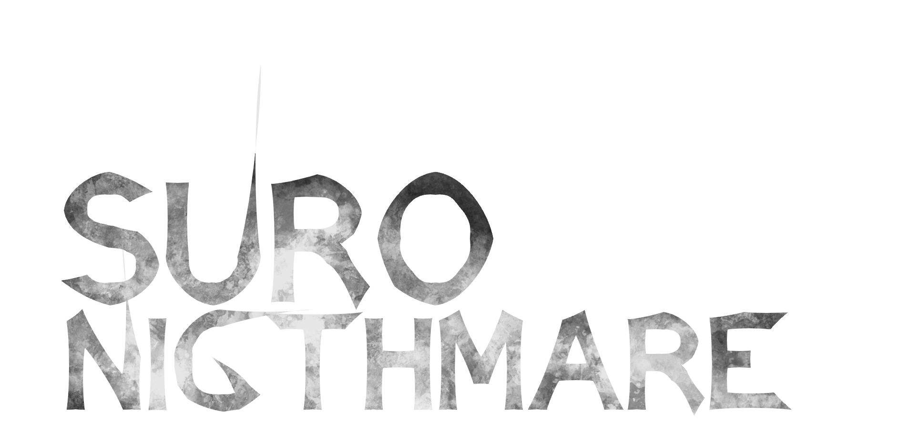

Game
Game Suro-Nightmare
Game horor 2D Platforming, berperan sebagai seorang anak kecil yang bertekad mencari kakaknya yang hilang di tengah hutan angker pada malam satu Suro di Jawa.
Saya seorang pengembang IT serbaguna yang aktif membangun game, aplikasi edukasi, dan sistem berbasis AI. Terbiasa menggabungkan teknologi seperti Unity, AR, dan machine learning untuk menciptakan solusi interaktif yang fungsional. Senang memecahkan masalah teknis dan mengubah ide kompleks menjadi proyek yang bisa digunakan secara nyata.
Dari kecil, saya selalu penasaran dengan hal-hal yang berhubungan dengan teknologi. Memasuki jenjang perkuliahan, saya mulai mencoba membuat game sederhana dan mempelajari cara kerja aplikasi interaktif. Rasa penasaran itu terus berkembang dan membawa saya mengeksplorasi berbagai bidang IT, seperti pengembangan game, augmented reality, computer vision, hingga penerapan AI untuk otomatisasi dan analisis data.
Saat ini saya fokus mengembangkan proyek-proyek berbasis Unity, AR Foundation, dan machine learning, sekaligus membangun aplikasi edukasi serta sistem yang memecahkan masalah nyata. Saya senang mengeksplorasi hal baru, menguji ide-ide teknis, dan mengubah konsep yang rumit menjadi solusi yang bisa digunakan.
Beberapa proyek yang pernah saya kerjakan.
Game horor 2D Platforming, berperan sebagai seorang anak kecil yang bertekad mencari kakaknya yang hilang di tengah hutan angker pada malam satu Suro di Jawa.
Website dari studio saya C&C Studio yang menampilkan layanan pembuatan game, aplikasi edukasi, dan solusi AR.

Website untuk tempat wisata di pati Sunan ngerang yang menampilkan informasi wisata, galeri, dan kontak.
Game 2D yang berfokus pada story karakter utama yang berusaha melewati berbagai rintangan.
Game hack and slash 3D yang saya buat bersama tim saya di program studi Independent Agate Academy.
Game RPG hack and slash 2D dengan mekanik crafting senjata dan sistem leveling karakter, game ini dapat digunakan sebagai tes kepribadian interaktif.
Tertarik bekerja sama atau ingin sekadar say hi? Silakan hubungi saya melalui form atau media sosial di bawah.
Saya terbuka untuk project freelance, kerja sama jangka pendek, ataupun diskusi santai tentang pengembangan web. Balasan biasanya dalam 1–2 hari kerja.